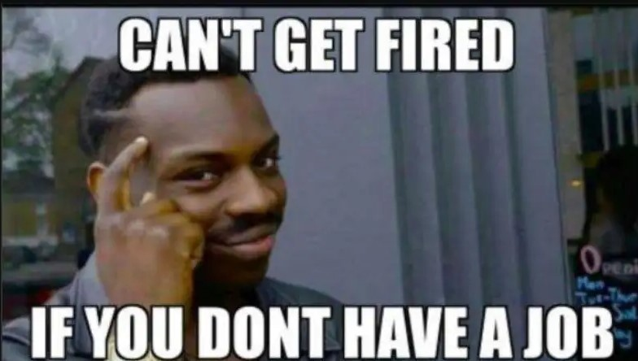

Un meme est un élément à tendance humoristique crée à partir de vidéos ou bien de photos que certains qualifient de virales.
En effet, le meme est une partie d’une vidéo ou d’une photo que l’on sort de son contexte afin de créer un décalage et donc de susciter le rire chez la personne qui visionne le meme.
De plus, un meme peut être une parodie de quelque chose, comme par exemple Sanic qui est une parodie du personnage du jeu vidéoludique Sonic.
La culture du meme est très ancrée dans les réseaux sociaux comme par exemple sur Reddit où ces images ou vidéo courtes font fureur et sont utilisées par la plupart des aficionados de Reddit.
Le meme à de nos jours tellement d’importance que certaines stars ou personnages politiques les reprennent, comme par exemple le meme du dab qui était un mouvement consistant à mettre sa tête
dans son coude. Nous avons donc des personnalités telles que Barack Obama ou encore Lionel messie qui ont réalisé un dab. Enfin le meme peut être utilisé comme illustration d’une idée.
Sur Reddit nombreux sont les posts lustrés d’un meme tel que le Smart guy (voir ci-dessous), qui est une image dans laquelle on voit un homme souriant et faisant signe qu’il est intelligent
avec le texte voulu en gras.
Mais le sens des mots varie en fonction de chacun. C’est pourquoi nous vous proposons ce site afin de mieux saisir cette notion :
Urban dictionary
Si vous voulez parfaire vos connaissances sur ce nouveau monde qu’est celui des memes nous vous recommandons ce site :
Know Your Meme
